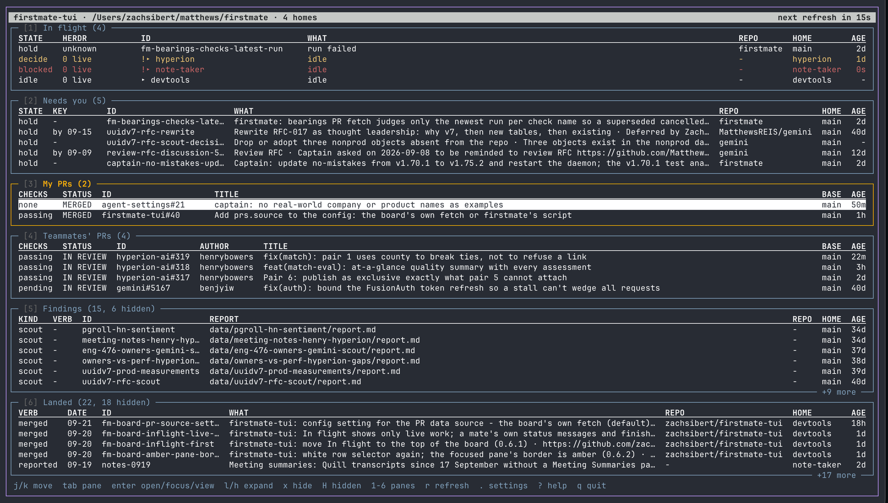

v0.7.1 a terminal board for coding agents
firstmate-tui
One live board over everything your coding agents are doing, and every pull request waiting on you.
$ curl -fsSL https://raw.githubusercontent.com/zachsibert/firstmate-tui/main/bin/install.sh | bash It fetches the release tarball, checks the checksum, and writes the command. It never touches your shell profile.
Six panes. One screen.
Each pane answers one question, and each has a number key. Press it to show or hide the pane. Every row is one scannable line, and a hold you set appears in exactly one place.
-
Captain's Call
What needs your own hand right now: the live holds you set, decisions an agent asked for, blocked agents, and pull requests that are yours to review. Nothing lands here unless it needs you.
-
Underway
One row per live agent, from every home, with what it is doing and whether its terminal pane is still alive. Finished work never lingers here.
-
My PRs
Every open pull request you authored, plus the ones recorded on unfinished tasks, with checks judged from the newest run of each check so a superseded failure does not count.
-
Teammates' PRs
The open pull requests where you are a requested reviewer and not the author, filtered by the label rules you set per repository.
-
Charted Next
Queued and gated work with the reason it waits: behind another task, deferred to a date, or held from outside. Warnings come first and are never counted.
-
Recently Landed
What shipped and what was written: merged pull requests, done tasks, the holds you answered, and every report an agent left behind, newest first.
Hands stay on the keyboard.
The board is read-only, with three exceptions: accept a hold, discard it, or defer it. Each one asks for your words or your confirmation first, then runs the supervisor's own command. The board never merges anything. That part is still yours.
-
a
Accept
The grid gives way to the hold's card so the full reason is in view. Pick an option by its letter, or type a line of your own. Enter records it and the row leaves the board.
-
d
Discard
One y to confirm. The task closes as not wanted, the cursor moves to the next row, and a refresh follows so the supervisor's state catches up.
-
D
Defer
Type a date, prefilled with today plus two weeks. The row leaves Captain's Call at once and comes back in Charted Next marked dated.
-
f
Search
Every pane at once, the way quick open works in an editor. A few letters in any order, best match first. Enter jumps to the row in its pane.
-
.
Settings
The running version and where it lives, the latest release, an upgrade in place, a list of betas by commit, and a way back to stable. Only y runs anything.
-
?
Help
Every key on one overlay. The bottom line of the board keeps the short list in view the whole time.
jkmove tabnext pane enteropen, focus, or view 1to6show or hide a pane xhide a row rrefresh now qquit
A board over a fleet.
firstmate is a supervisor that runs coding agents from a checkout on your machine and keeps its state on disk. herdr is the terminal multiplexer those agents run in. firstmate-tui sits over both and puts what they know on one screen that refreshes itself.
readsthe state on disk
- The main home, and every delegate home it lists.
- Holds, decisions, queued work, reports.
- Nothing is written back except through the supervisor's own command.
askstwo outside sources
- GitHub, for your pull requests and their checks.
- herdr, for which agent panes are still alive.
- Both without holding up the rest of the board.
nevergets ahead of you
- Never edits a supervisor file itself.
- Never answers a question with words of its own.
- Never merges anything.
- Refresh in two beats
- The fleet snapshot lands and four panes repaint at once. The GitHub fetch starts on its own and the two pull request panes repaint when it returns. A slow GitHub never delays the fleet.
- Second launch is instant
- The board draws what it showed last time, each pane marked cached until live data lands, and puts the cursor back on the row you were on.
- Ships as a release
- Every merge is a GitHub Release with a checksum. Upgrade from the Settings page. Betas are published from any branch and named by commit, so you can try one exact change.
- Fits a narrow terminal
- Wide columns drop first. Below 80 columns the six panes become one scrolling list with section headers.
The real thing.

Zach Sibert
software engineer
I run a small fleet of coding agents and got tired of scrolling back through chat to find out where things stand. firstmate-tui is the board I wanted: one screen, six questions answered, and nothing done on my behalf without my say.